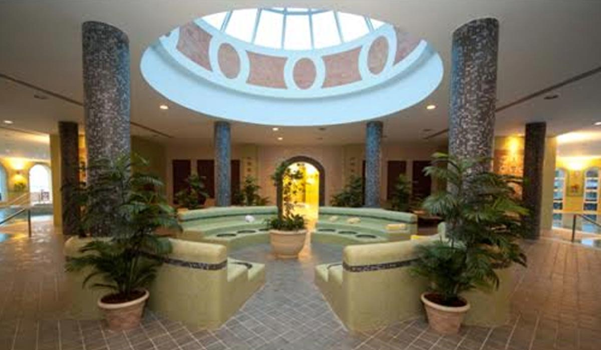
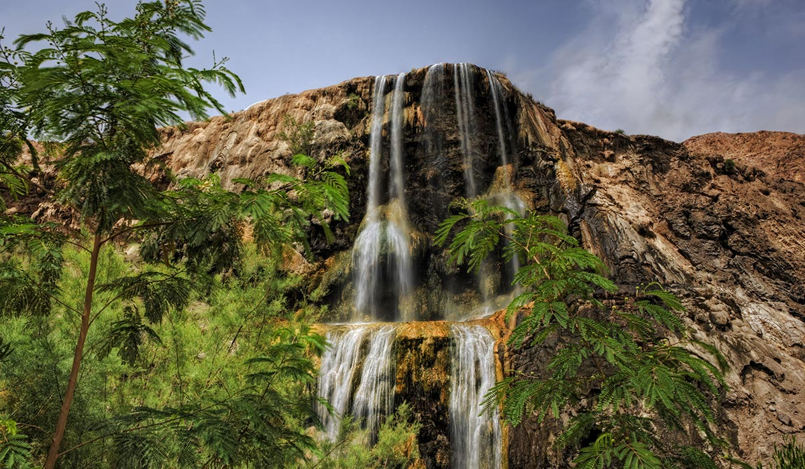
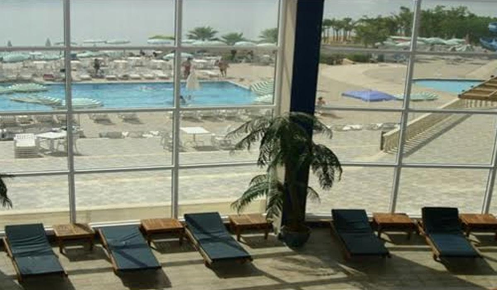
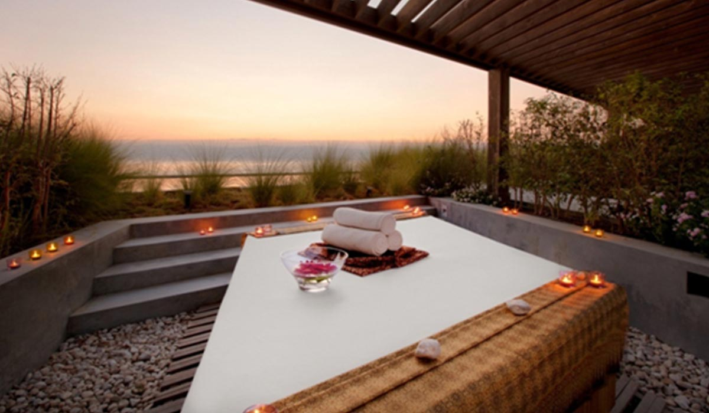

Thalgo Spa
Im luxuriösen Spa des Crowne Plaza Jordan Dead Sea Resort & Spa erwartet Sie auf einer großzügigen Fläche von mehr als 6.000 Quadratmetern eine Welt exklusiver Körperbehandlungen, Massagen und Schönheitstherapien. Das Spa verfügt über 30 Behandlungszimmer, Dampfsauna und einen Totes Meer-Salzwasserpool, dessen Wasser den Körper von rheumatischen Schmerzen befreit, Hautkrankheiten heilt und dabei hilft, Giftstoffe zu eliminieren.

Hammamat Ma’in
Die bei Einheimischen und Touristen gleichermaßen beliebten heißen Quellen liegen 264 Meter unter dem Meeresspiegel in einer der atemberaubendsten Wüstenoasen der Welt. Alljährlich suchen Tausende von Besuchern die hyperthermalen Wasserfälle auf, um das mineralhaltige Wasser zu genießen.

Das Dead Sea Spa Hotel
Das erste Hotel am Toten Meer in Jordanien befindet sich auf 420 Metern unter dem Meeresspiegel – dem tiefsten Punkt der Erdoberfläche. Das Spa und medizinische Zentrum mit weltweit hervorragendem Ruf, sind ie ersten in der Region, die wirkungsvoll natürliche Hautbehandlungen und Hautpflege offerieren. Zudem können Sie Massagen, Schlammpackungen, den Indoor Salzwasserpool und ein privates Solarium mit einem privaten, direkten Zugang zum Toten Meer genießen.

Anantara Spa
Inspiriert von der therapeutischen Wirkung des Toten Meeres, können Sie im Anantara Spa bei vielfältigen Angeboten die Seele baumeln lassen.